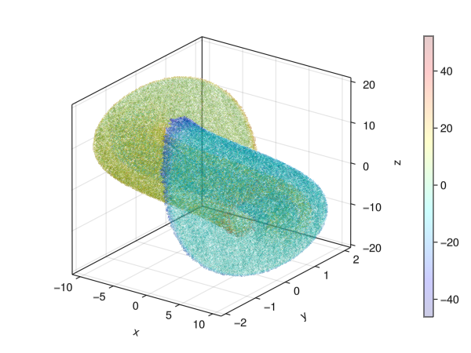
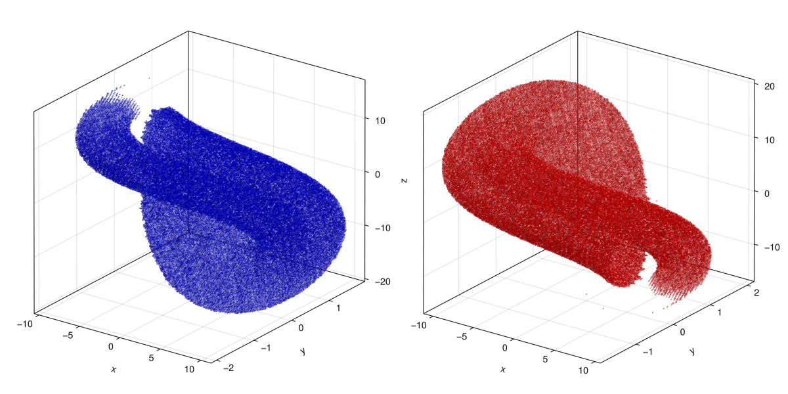
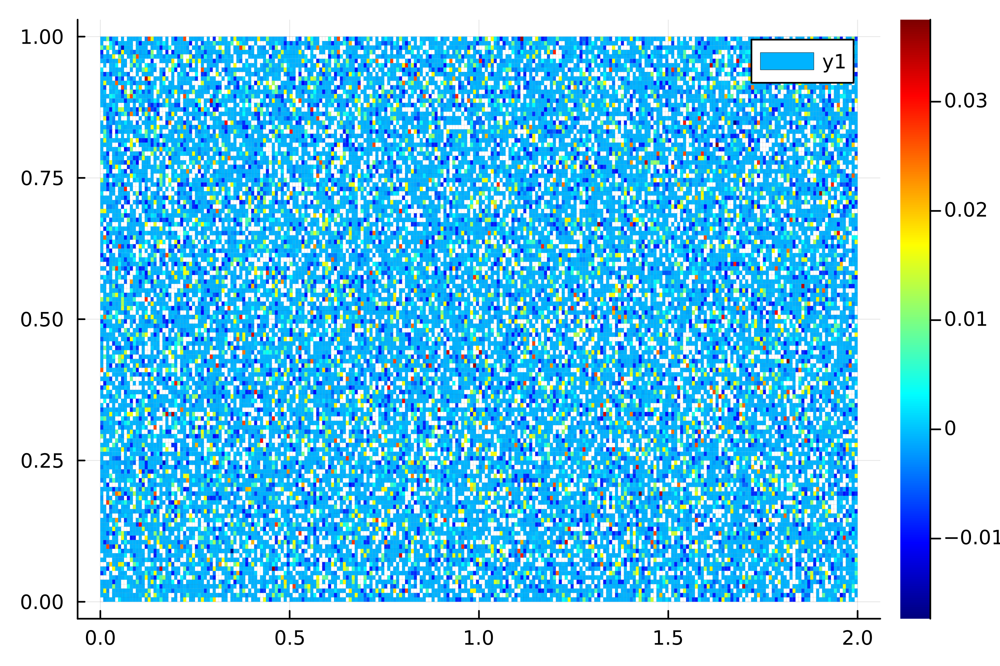

Almost Invariant (metastable) Sets
Mathematical Background
In applied dynamical systems research we often wish to determine regions of phase space which "resist mixing". These regions can provide valuable information on the system, e.g. oceanic eddies are good transporters of water that is warmer/cooler/saltier than surrounding water [8].
In the context of autonomous dynamics these sets which mitigate transport between their interior and the surrounding phase space are referred to as almost invariant or metastable. Mathematically, we wish to find sets $A \subset Q$ of the domain $Q$ which satisfy $A \approx f^{-1} (A)$ or in the context of $\mu$-measure satisfy
\[p(A) := \frac{\mu (A \cap f^{-1} (A))}{\mu (A)} \approx 1 . \]
Recalling the section on Transfer Operator and Box Measures, this can be solved by considering the eigenproblem $f_{\#}\,\mu \approx \mu$. Specifically, we wish to
- find a
BoxMeasureμcorresponding to an eigenvalueλ ≈ 1, - split the partition $P$ into
Boxsets where $A^+ = \left\{ C \in P : \mu (C) \geq \tau \right\}$ and $A^- = \left\{ C \in P : \mu (C) < \tau \right\}$ for some threshhold $\tau$ (typically $\tau = 0$).
Then we have that the transition probability $p(A^\pm) \approx 1$.
Example
using GAIO
# Chua's circuit
const a, b, m0, m1 = 16.0, 33.0, -0.2, 0.01
v((x,y,z)) = (a*(y-m0*x-m1/3.0*x^3), x-y+z, -b*y)
# time-0.25 flow map
f(x) = rk4_flow_map(v, x, 0.05, 5)
center, radius = (0,0,0), (12,3,20)
Q = Box(center, radius)
P = BoxGrid(Q, (256,256,256))
F = BoxMap(:grid, f, Q)
# computing the attractor by covering the 2d unstable manifold
# of two equilibria
x = [sqrt(-3*m0/m1), 0.0, -sqrt(-3*m0/m1)] # equilibrium
S = cover(P, [x, -x])
W = unstable_set(F, S)
T = TransferOperator(F, W, W)
# we give Arpack some help converging to the eigenvalues,
# see the Arpack docs for explanations of keywords
tol, maxiter, v0 = eps()^(1/4), 1000, ones(size(T, 2))
λ, ev = eigs(T; nev=6, which=:LR, maxiter=maxiter, tol=tol, v0=v0)
λ6-element Vector{ComplexF64}:
0.9999999999999813 + 0.0im
0.9782889179078947 + 0.0im
0.9334898586803636 + 0.08261276298775118im
0.9334898586803636 - 0.08261276298775118im
0.9300663505292164 + 0.14257243874771158im
0.9300663505292164 - 0.14257243874771158imWe see that the first eigenvalue is approaching $1$. This is the invariant measure. There is also an eigenvalue near, but not exactly $1$. Let us examine this eigenmeasure a but more closely.
μ = (x -> sign(x) * log(abs(x))) ∘ real ∘ ev[2]BoxMeasure in 256 x 256 x 256 - element BoxGrid with 483819 boxes in its suportusing GLMakie
fig = Figure();
ax = Axis3(fig[1,1], aspect=(1,1.2,1), azimuth=-3pi/10)
ms = plot!(ax, μ, colormap=(:jet, 0.2))
Colorbar(fig[1,2], ms)
There are clearly two "sections" corresponding to the two "scrolls" of the attractor. We can separate these sections as follows.
τ = 0
B1 = BoxSet(P, Set(key for key in keys(μ) if μ[key] ≤ τ))
B2 = BoxSet(P, Set(key for key in keys(μ) if μ[key] > τ))243478 - element BoxSet in 256 x 256 x 256 - element BoxGridfig = Figure(resolution=(1200,600));
ax1 = Axis3(fig[1,1], aspect=(1,1.2,1), azimuth=-3pi/10)
ms1 = plot!(ax1, B1, color=(:blue, 0.4))
ax2 = Axis3(fig[1,2], aspect=(1,1.2,1), azimuth=-3pi/10)
ms2 = plot!(ax2, B2, color=(:red, 0.4))┌ Warning: Found `resolution` in the theme when creating a `Scene`. The `resolution` keyword for `Scene`s and `Figure`s has been deprecated. Use `Figure(; size = ...` or `Scene(; size = ...)` instead, which better reflects that this is a unitless size and not a pixel resolution. The key could also come from `set_theme!` calls or related theming functions.
└ @ Makie ~/.julia/packages/Makie/iRM0c/src/scenes.jl:220
n_frames = 120
record(fig, "almost_inv_rotating.gif", 1:n_frames, framerate=20) do frame
v = sin(2pi * frame / n_frames)
ax1.elevation[] = pi/20 - pi * v / 20
ax2.elevation[] = pi/20 - pi * v / 20
ax1.azimuth[] = 3pi * v / 4
ax2.azimuth[] = 3pi * v / 4
end"almost_inv_rotating.gif"
Example 2: Double Gyre Map
We will consider the periodically driven double-gyre which is a nonautonomous system of 2 ODEs
using GAIO, LinearAlgebra
const A, ϵ, ω = 0.25, 0.25, 2π
f(x, t) = ϵ * sin(ω*t) * x^2 + (1 - 2ϵ * sin(ω*t)) * x
df(x, t) = 2ϵ * sin(ω*t) * x + (1 - 2ϵ * sin(ω*t))
double_gyre(x, y, t) = (
-π * A * sin(π * f(x, t)) * cos(π * y),
π * A * cos(π * f(x, t)) * sin(π * y) * df(x, t)
)
# autonomize the ODE by adding a dimension
double_gyre((x, y, t)) = (double_gyre(x, y, t)..., 1)
# nonautonomous flow map: reduce back to 2 dims
function Φ((x, y), t, τ, steps)
(x, y, t) = rk4_flow_map(double_gyre, (x, y, t), τ, steps)
return (x, y)
endΦ (generic function with 1 method)We can construct an autonomous system which behaves approximately like the real system by fixing one t₀ and considering only the time-$T$ flow map, always starting at time t₀.
t₀, τ, steps = 0, 0.1, 20
t₁ = t₀ + τ * steps
Tspan = t₁ - t₀
Φₜ₀ᵗ¹(z) = Φ(z, t₀, τ, steps)Φₜ₀ᵗ¹ (generic function with 1 method)t₀, τ, steps = 0, 0.1, 20
t₁ = t₀ + τ * steps
Φₜ₀ᵗ¹(z) = Φ(z, t₀, τ, steps)
domain = Box((1.0, 0.5), (1.0, 0.5))
P = BoxGrid(domain, (256, 128))
S = cover(P, :)
F = BoxMap(:grid, Φₜ₀ᵗ¹, domain, n_points=(6,6))
T = TransferOperator(F, S, S)
# we give Arpack some help converging to the eigenvalues,
# see the Arpack docs for explanations of keywords
tol, maxiter, v0 = eps()^(1/4), 1000, ones(size(T, 2))
λ, ev = eigs(T; which=:LR, maxiter=maxiter, tol=tol, v0=v0)
λ3-element Vector{ComplexF64}:
0.9999999999208726 + 0.0im
0.9996974029726503 + 0.0im
0.9995772599121882 + 0.0imusing Plots
p = plot(real ∘ ev[2], colormap=:jet)
Since the map is nonautonomous, this image should change if we vary the start time t₀.
n_frames = 120
times = range(t₀, t₁, length=n_frames)
anim = @animate for t in times
Φₜ(z) = Φ(z, t, τ, steps)
F = BoxMap(:grid, Φₜ, domain, n_points=(6,6))
F♯ = TransferOperator(F, S, S)
λ, ev = eigs(F♯; which=:LR, maxiter=maxiter, tol=tol, v0=v0)
μ = real ∘ ev[2]
# do some rescaling to get a nice plot
s = sign(μ[(65,65)])
M = maximum(abs ∘ μ)
μ = s/M * μ
plot(μ, clims=(-1,1), colormap=:jet)
end;
gif(anim, "gyre_almost_inv.gif", fps=20)